Personal Project
A local-first desktop app for authoring and running homebrew for the Daggerheart tabletop RPG. It builds every kind of rulebook content (classes, domains, adversaries, equipment, and more), then lets a Game Master run a live session on top of it: Fear tracking, live adversary stat tracking, a standing party roster, and dice-backed loot rolls.
Latest release: v1.8.3
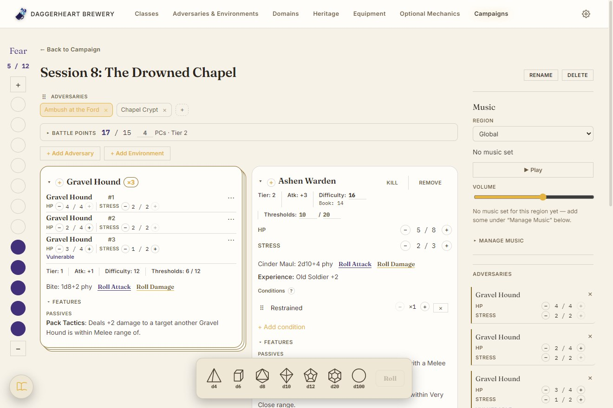
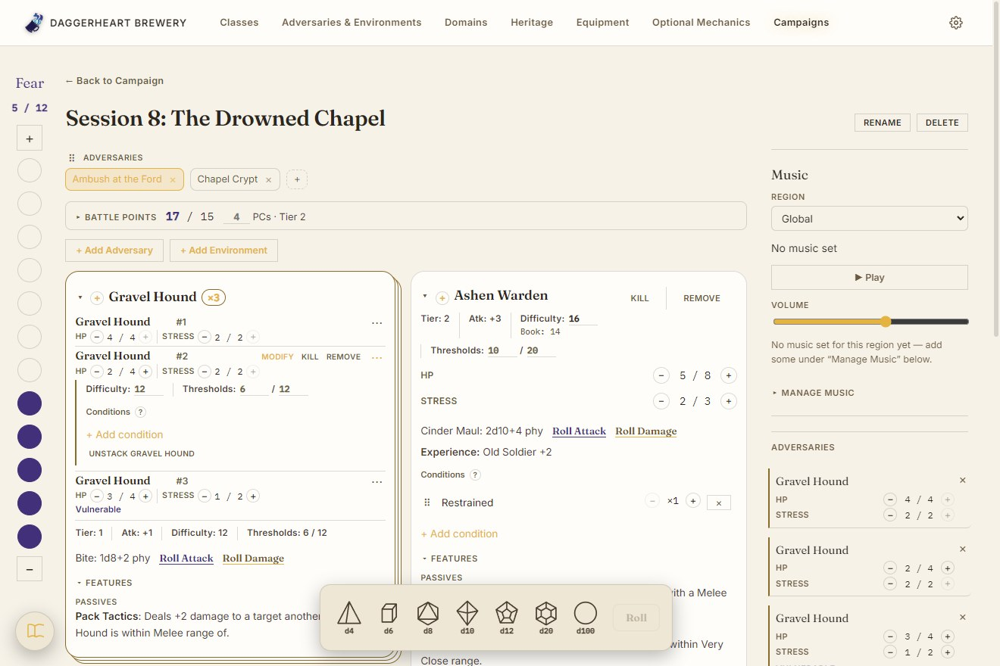
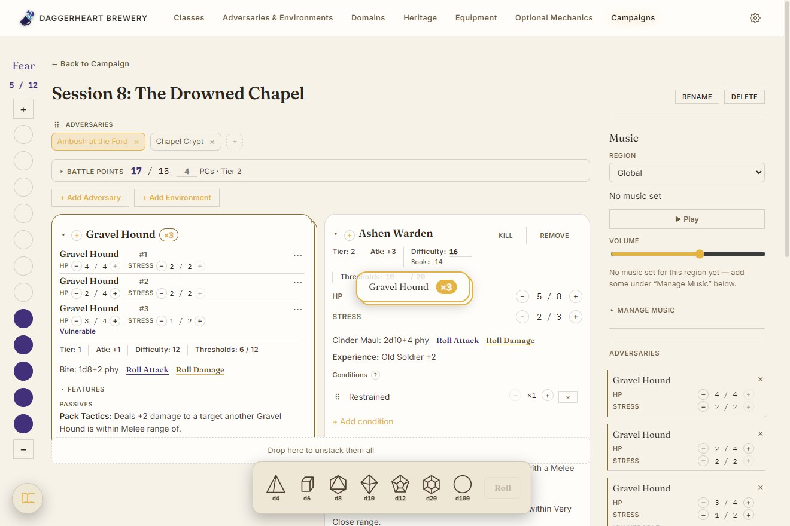
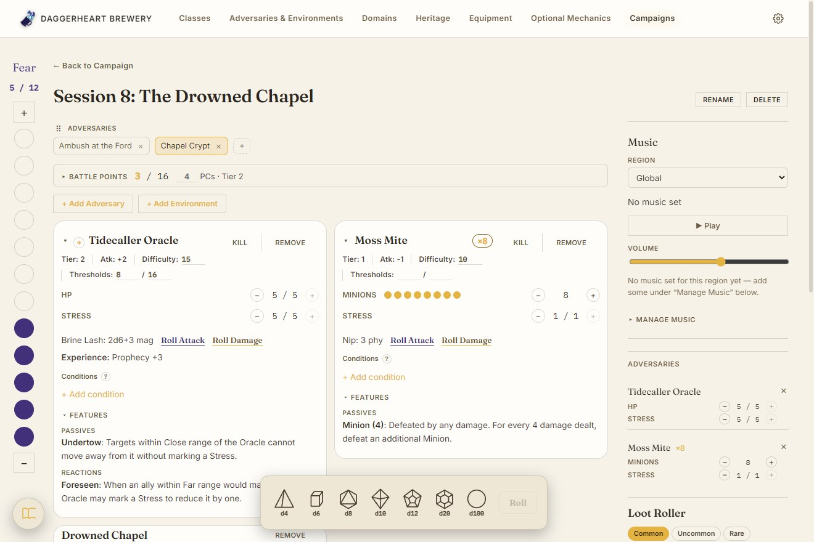
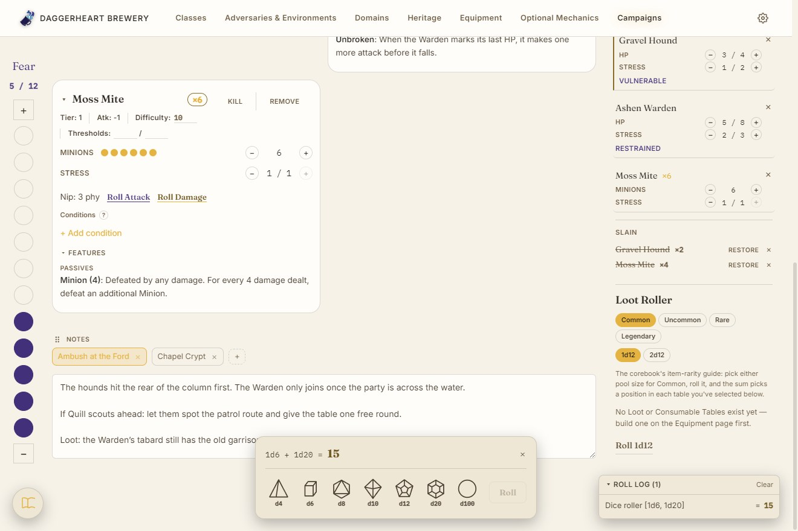
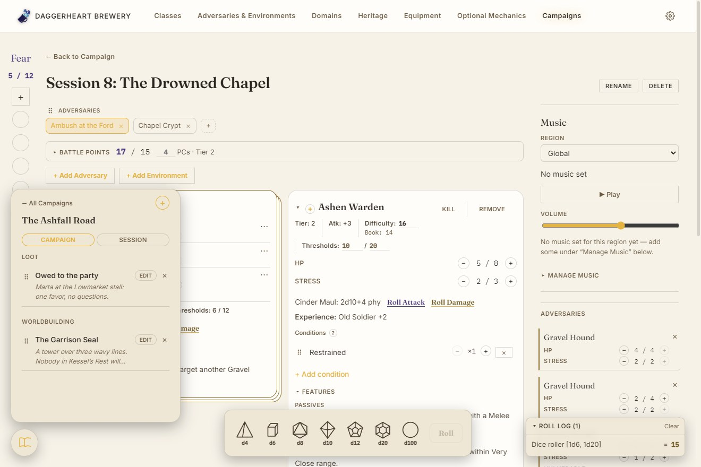
One page runs the fight. Fear sits on a rail down the left edge, each encounter is prepped on its own Combat tab with a Battle Points budget, and pulling an Adversary in snapshots it so a GM's overrides never touch the book record. Identical Adversaries stack into a single stat block by dragging one across the others, each keeping its own HP and Stress on a row of its own; Minions collapse to a counted stack of pips. The fallen move to a Slain tally, Notes follow the Combat tab of the same name, and a floating Dice Tray and the Journal are always in reach.
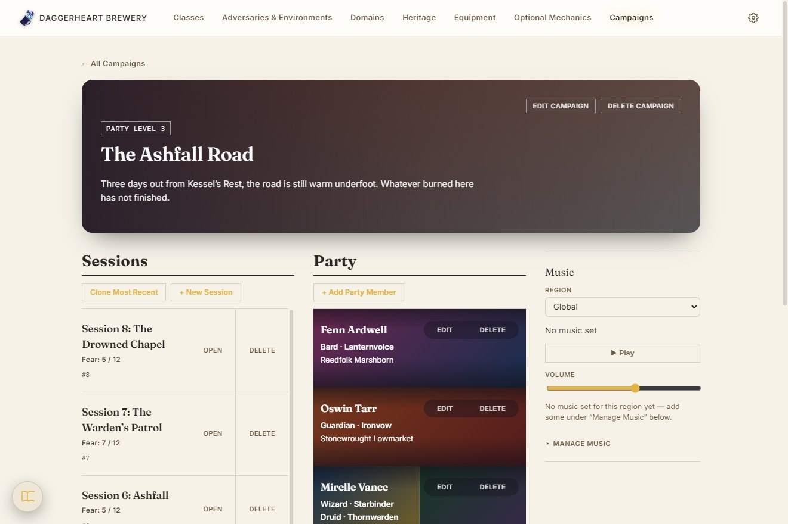
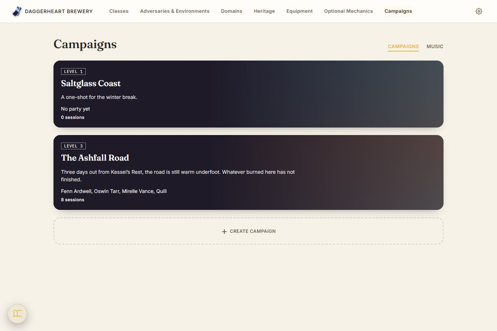
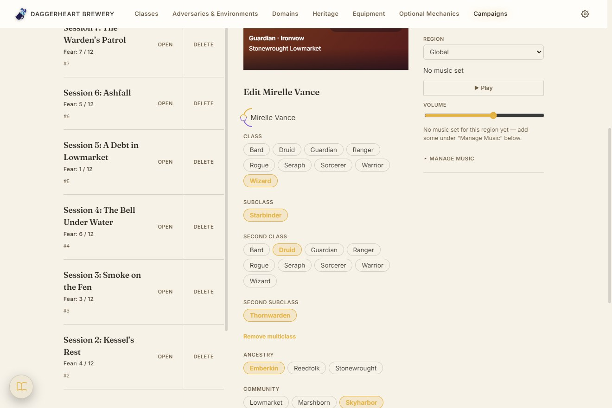
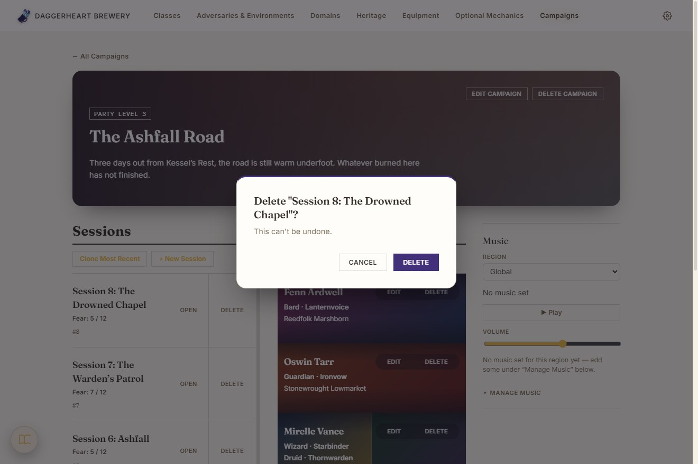
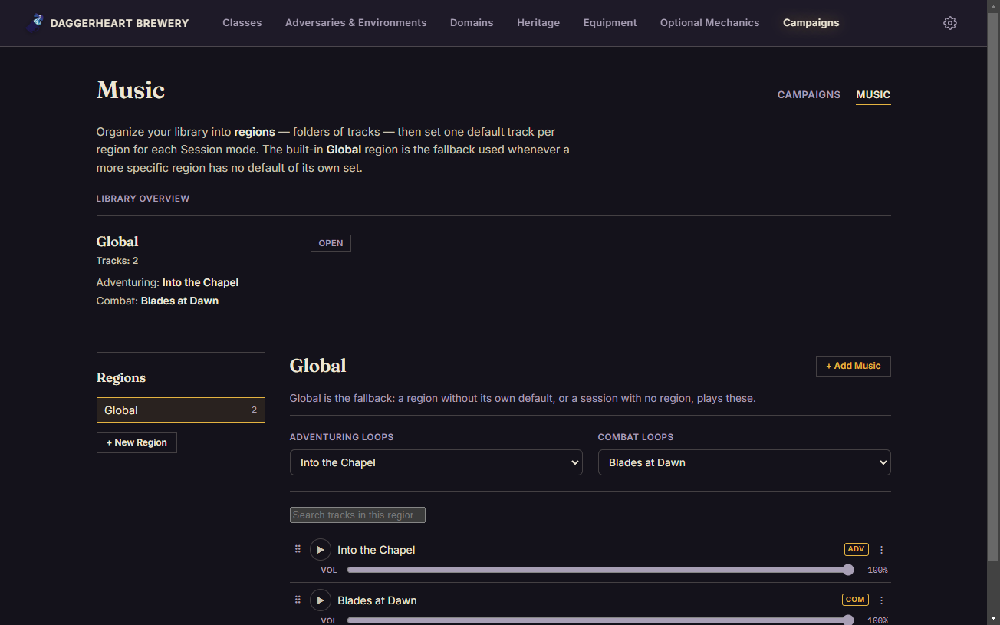
A Campaign keeps its Sessions and its Party side by side. The Party, the board, Fear and Notes carry from one Session to the next without ever rewriting an earlier one, so Session 3 can change what Session 2 never sees. Party members are a name, a Class and Subclass (two when multiclassed) and a Heritage, on tiles coloured from their Class's Domains. A per-region music library loops a default track for adventuring and another for combat.
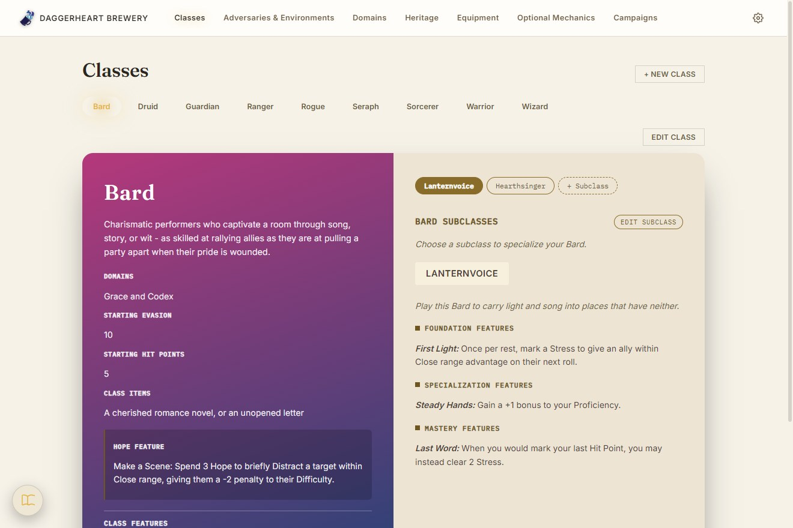
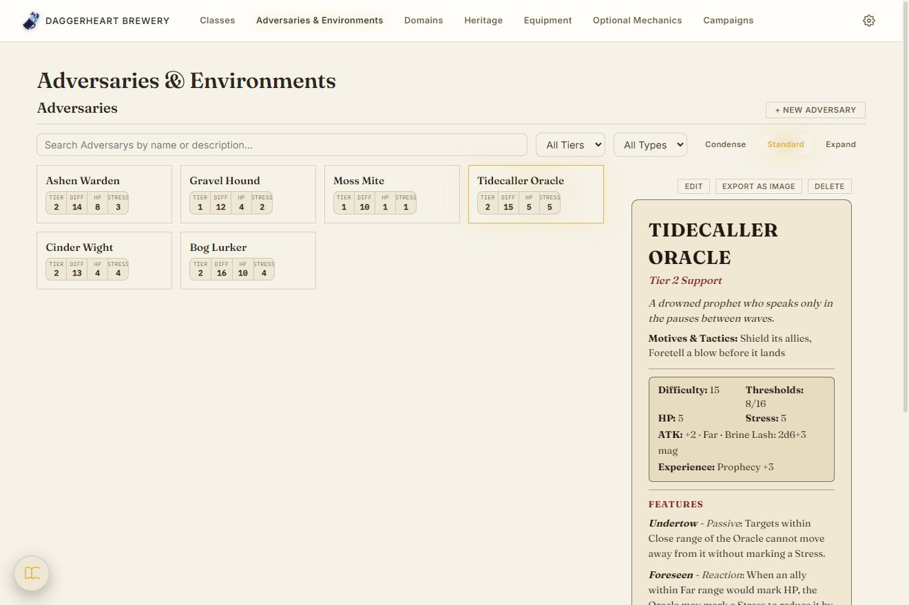
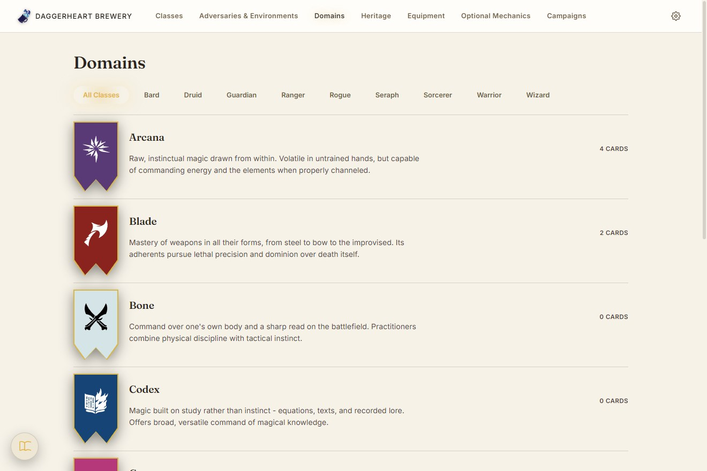
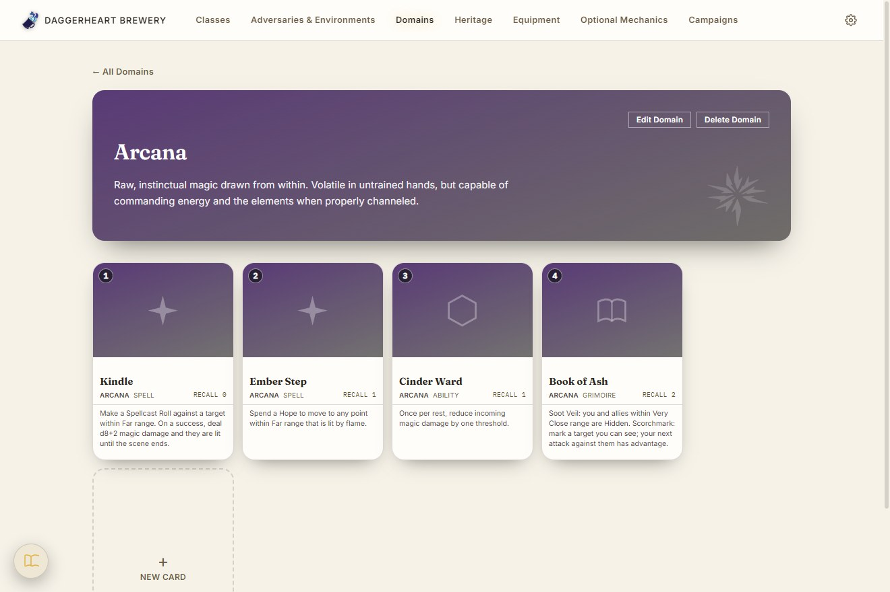
Classes, Subclasses, Domains and their Cards, Adversaries, Environments, equipment and Heritage are all built with the same validated forms. Adversaries and Environments browse as a dense tile gallery with search and Tier filters, and selecting one opens a parchment stat block modeled on the printed layout, ready to export as a PNG.
Screenshots show a made-up demo campaign: the adversaries, subclasses, heritage and card text are invented for the page, not published book content. Scroll each window sideways for more, and click a screenshot to open it full size.
Classes, Subclasses, Domains and Domain Cards, Adversaries, Environments, Weapons, Armor, Loot, Ancestries, Communities, and more — each with real validation (a Secondary weapon can't be Two-Handed; a Class's two Domains must differ).
Adversaries and Environments render as a parchment stat block modeled on the printed layout, and export to a PNG in one click. Browse them as a dense gallery, a spotlight view, or full-size sheets.
Campaigns whose party, board, Fear, and notes carry from one session to the next without ever rewriting an earlier session. Adversaries are pulled in as independent live copies with HP/Stress tracked as marked boxes, identical ones stack into a single stat block by dragging, and a loot roller reproduces the rulebook's rarity dice mechanic. A per-region music library loops a default track for adventuring and for combat.
Feature sections (Passives, Actions, Reactions, Evolutions…) are data-driven: a new rules element is one line in a registry, and a homebrew system can add its own sections straight from the editor.
contextBridge IPC API. Chosen so the same data layer could later back a React Native client, which can't embed a JVM.
makeCollection() factory gives every content type idempotent-by-name create, PATCH-semantics update, and per-type validation. Where the factory doesn't fit (a session can pull the same adversary in twice), the collection is hand-written rather than forced through it. Anything that follows a campaign is stored as per-session versions, not copies, so an edit in session 3 never touches session 2.
electron-updater behind a small state machine that always asks before downloading. Shipping it meant debugging a blank window in the packaged build (absolute asset paths under file://) and an OneDrive sync lock that broke the build inside a synced folder.
Windows installer, no account or internet needed. Your data is one JSON file on your machine.
Latest release: v1.8.3
The installer isn't code-signed, so Windows SmartScreen may warn you: choose "More info", then "Run anyway". It ships without any published book content. Unofficial fan project; Daggerheart is a trademark of Darrington Press.